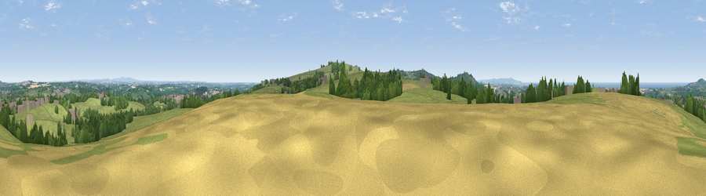

Viewpoint near Redruth
#5979 in England · top 12% of its area beats it · near RedruthWhere it is
The exact computed spot (SW 71288 42575). Click the marker for map links.
The view, rendered

A 360° render of this exact spot computed from the terrain model, tree cover and land cover — summer colours, afternoon light, calibrated against photographs of famous viewpoints. Real trees, hedges and buildings will differ in detail.
The panorama
Grey silhouette: terrain skyline in each direction (720 bearings, Earth curvature and refraction included). Dashed green: skyline with trees (+15 m) and buildings (+8 m) as obstacles. Blue strip: how far the ground is visible on each bearing.
Where the view opens
Wedge length = distance to the farthest visible ground on that bearing (vegetation-aware). Rings at 10, 25 and 50 km.
What fills the view
60% grassland · 18% woodland · 12% cropland · 6% built-up · 4% water
Angular shares of the visible panorama (visual magnitude), not map area. Landscape diversity 0.51 (0–1 Shannon).
Key numbers
More beautiful places nearby
The staircase of upgrades: each row has a higher view potential than everything closer. Driving times are estimates from straight-line distance, calibrated against real road routing — check an actual route before setting out.
| Place | Direction | Drive | Score |
|---|---|---|---|
| Carn Marth | S · 2 km | ~5 min | 74.0 |
| Viewpoint near Lanner | SSE · 2 km | ~5 min | 74.5 |
| Carn Brea | SW · 3 km | ~8 min | 81.1 |
| St Agnes Beacon | N · 8 km | ~16 min | 86.1 |
| Rosewall Hill | W · 23 km | ~38 min | 88.0 |
| Viewpoint near Combe Martin | NE · 137 km | ~161 min | 88.9 |
| Holdstone Hill | NE · 139 km | ~162 min | 90.2 |
| The Knoll | ENE · 187 km | ~207 min | 91.0 |
50.23882, -5.20879 · source: screening · position refined by local search. Computed location — check access rights before visiting.